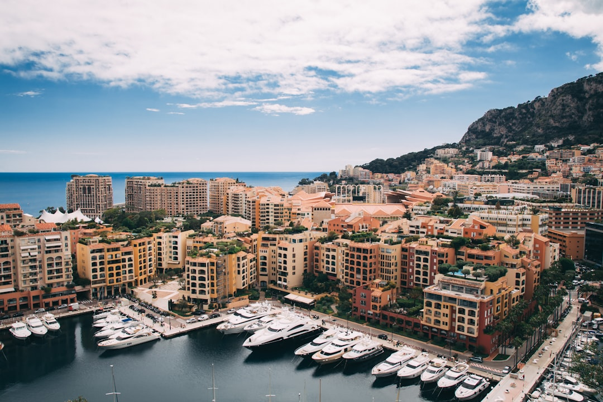
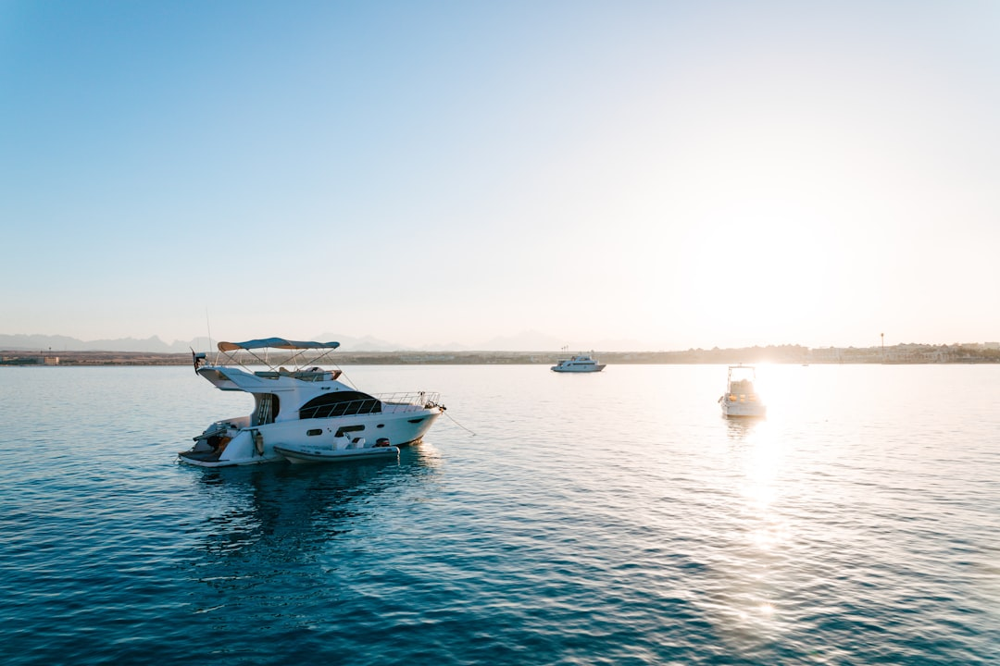
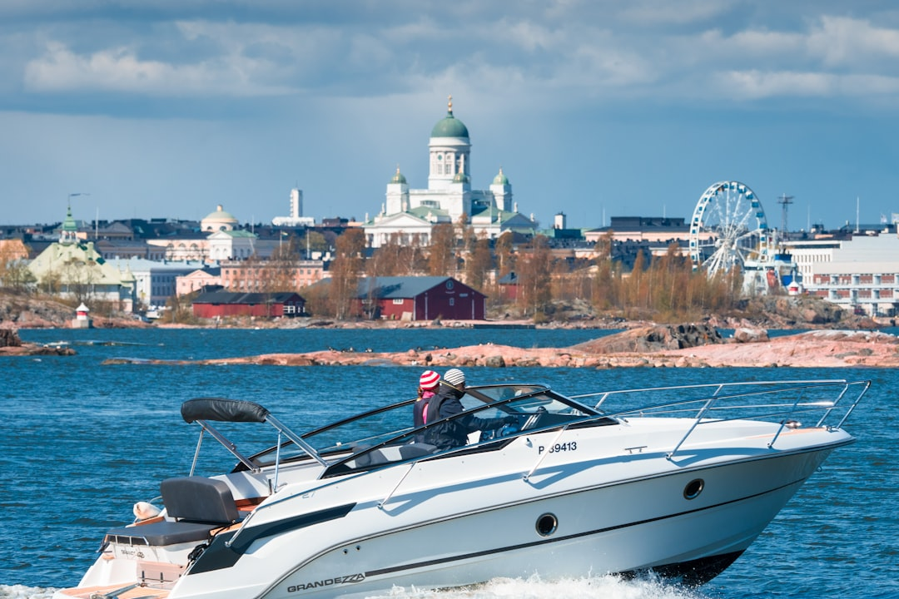
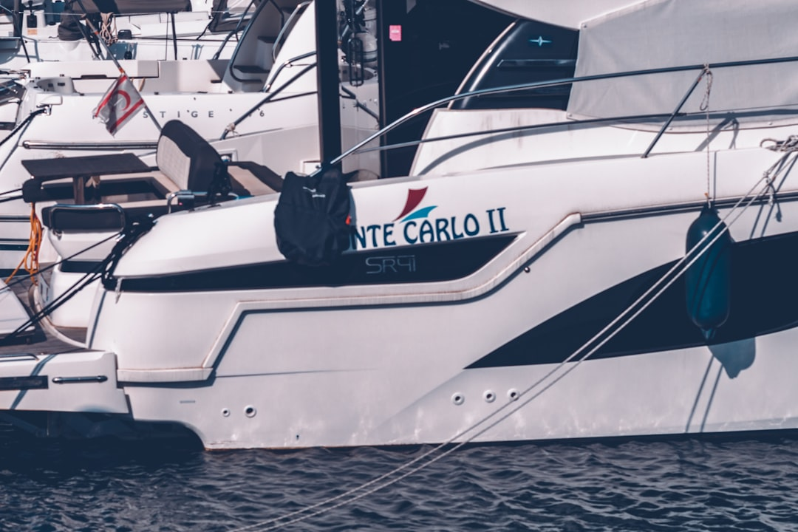
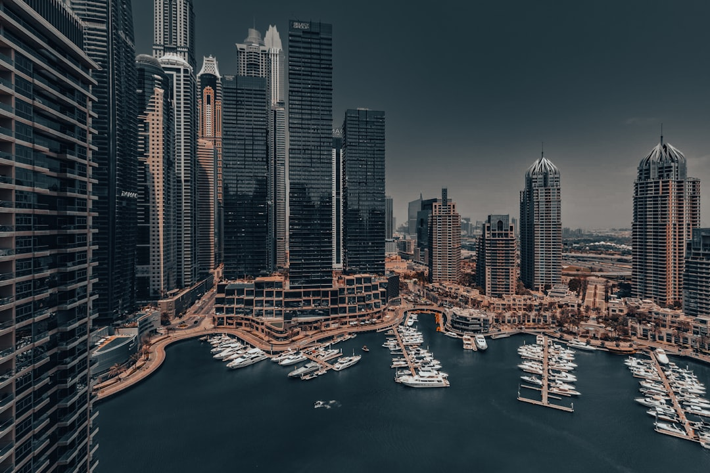
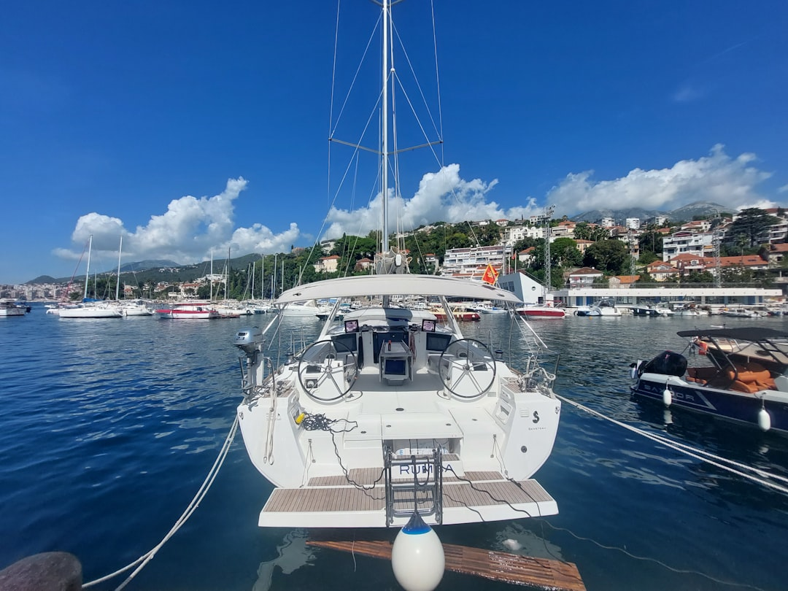
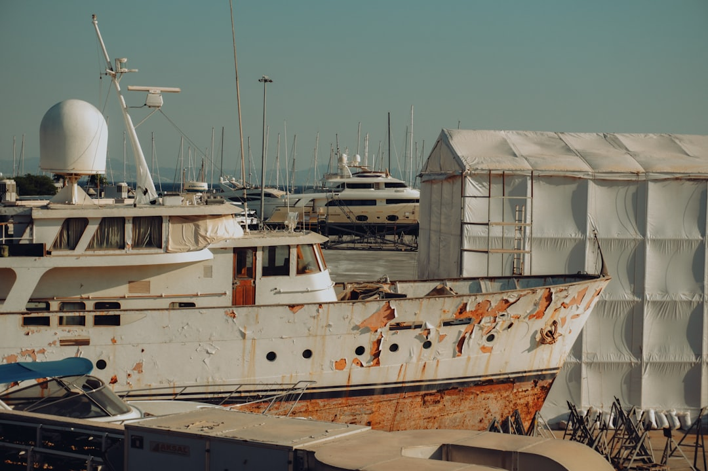

News
Formula 1 Abu Dhabi yacht charter
Formula 1 Abu Dhabi yacht charter
Onboard Amenities for VIP Guests
Crew and Catering Options
Luxury Brands Partnership
Viewing Experience
Viewing Experience
Prime Locations for Race Viewing
Audiovisual Equipment on Yachts
Exclusive Access to Marina Events
Booking and Regulations
Booking and Regulations
Chartering Process and Costs
Licensing and Legal Requirements
Peak Season Availability and Reservations
Contact Us

What is the best way to experience the Abu Dhabi Grand Prix with a yacht charter?
Oct 09, 2024
The Abu Dhabi Grand Prix is one of the most thrilling events on the Formula 1 calendar, where speed meets luxury under the stunning backdrop of the Yas Marina Circuit.. For enthusiasts and adventurers alike, experiencing this grand spectacle from a yacht offers an unparalleled blend of excitement and opulence.
What is included in a luxury yacht charter during the Abu Dhabi F1 weekend?
Oct 09, 2024
A luxury yacht charter during the Abu Dhabi F1 weekend is an experience that combines the thrill of world-class motorsport with the opulence and exclusivity of yachting.. As the Formula 1 calendar reaches its crescendo, the Yas Marina Circuit becomes a playground for those seeking both adrenaline and indulgence.

What is the cost of renting a yacht for the Abu Dhabi Formula 1 race?
Oct 09, 2024
The Abu Dhabi Formula 1 race is not just an event; it’s a spectacle, a confluence of speed, luxury, and prestige that captures the world's attention each year.. For those who wish to experience this grand occasion in unparalleled style, renting a yacht has become an increasingly popular choice.

What is the benefit of choosing a yacht charter over traditional grandstand seating at Yas Marina Circuit?
Oct 09, 2024
Choosing a yacht charter over traditional grandstand seating at Yas Marina Circuit offers a unique blend of luxury, exclusivity, and an unmatched viewing experience.. As the Formula 1 cars speed by in a blur of color and sound, the advantages of watching from the deck of a yacht become abundantly clear. Firstly, the sheer comfort and opulence of a yacht are undeniable.

What is the process for booking a yacht for the F1 Abu Dhabi event?
Oct 09, 2024
Booking a yacht for the F1 Abu Dhabi event is a luxurious and thrilling way to experience one of the most prestigious motorsport races in the world.. The process, while intricate, promises an unparalleled view and indulgent hospitality amidst the exhilarating atmosphere of the Yas Marina Circuit.

What is it like to watch an F1 race from a private yacht in Abu Dhabi?
Oct 09, 2024
Watching an F1 race from a private yacht in Abu Dhabi is an experience that can only be described as the epitome of luxury and excitement.. The Yas Marina Circuit, where the Abu Dhabi Grand Prix takes place, is renowned for its stunning views and unique layout, with part of the track winding around the marina.

What is required to host an exclusive party on a chartered yacht during the Grand Prix?
Oct 09, 2024
Hosting an exclusive party on a chartered yacht during the Grand Prix is an exhilarating endeavor that combines luxury, exclusivity, and the electrifying atmosphere of high-speed racing.. This unique experience requires meticulous planning, attention to detail, and a touch of creativity to ensure that every aspect of the event reflects sophistication and excitement. First and foremost, securing the right yacht is crucial.
How to Experience the Ultimate Formula 1 Thrill with an Abu Dhabi Yacht Charter
Oct 09, 2024
Experiencing the Ultimate Formula 1 Thrill with an Abu Dhabi Yacht Charter Imagine the adrenaline rush as the formidable roar of high-performance engines fills the air, echoing across the shimmering waters of the Arabian Gulf.. The sun dips below the horizon, casting a golden hue over Yas Marina Circuit, and you find yourself at the heart of this electrifying spectacle aboard a luxurious yacht.
How to Make Your Abu Dhabi Grand Prix Weekend Unforgettable with a Yacht Charter
Oct 09, 2024
Title: Making Your Abu Dhabi Grand Prix Weekend Unforgettable with a Yacht Charter The Abu Dhabi Grand Prix is not merely a race; it is an exhilarating experience that brings together the thrill of Formula 1, the luxury of high-end hospitality, and the vibrant culture of the United Arab Emirates.. If you're planning to attend this prestigious event, what better way to elevate your weekend than by chartering a yacht?

How to Get Front-Row Views of Formula 1 Action: The Secret of an Abu Dhabi Yacht Charter
Oct 09, 2024
Title: How to Get Front-Row Views of Formula 1 Action: The Secret of an Abu Dhabi Yacht Charter There's something uniquely exhilarating about the world of Formula 1 racing.. The thunderous roars of the engines, the precision of drivers maneuvering through tight corners, and the electrifying atmosphere in the stands all contribute to a spectacle that captivates millions around the globe.
How to Transform Your F1 Adventure in Abu Dhabi into a Luxurious Escape
Oct 09, 2024
Abu Dhabi, a city of opulence and grandeur, offers the perfect backdrop for an unforgettable Formula 1 adventure.. The thrilling roar of engines at the Yas Marina Circuit draws racing enthusiasts from around the globe.
How to Secure the Best Spot for the Abu Dhabi Grand Prix: A Guide to Yacht Charters
Oct 09, 2024
The Abu Dhabi Grand Prix is not just a race; it's an event that epitomizes luxury, excitement, and the thrill of Formula 1.. Set against the stunning backdrop of Yas Marina Circuit, this race is one of the most anticipated events on the sporting calendar.
How to Elevate Your Formula 1 Experience with an Exclusive Abu Dhabi Yacht Charter
Oct 09, 2024
The thrill of Formula 1 racing is an experience like no other.. The roaring engines, the heart-pounding speed, and the electric atmosphere all combine to create a spectacle that captivates millions around the globe.
How to Enjoy Formula 1 Like Never Before: Discovering the Magic of an Abu Dhabi Yacht Charter
Oct 09, 2024
Title: How to Enjoy Formula 1 Like Never Before: Discovering the Magic of an Abu Dhabi Yacht Charter Formula 1, the pinnacle of motor racing, is a sport that captivates millions with its blend of speed, strategy, and spectacle.. Enthusiasts from around the globe flock to iconic circuits to witness the drama unfold on track.
The Experience of Watching the Abu Dhabi Grand Prix from a Yacht
Oct 09, 2024
The Experience of Watching the Abu Dhabi Grand Prix from a Yacht Imagine a setting where luxury meets adrenaline, where the serene lapping of waves juxtaposes with the roaring sound of high-performance engines.. This is the experience of watching the Abu Dhabi Grand Prix from a yacht—a truly unique blend of opulence and thrill that etches itself into one's memory as an extraordinary encounter. As you step aboard the yacht anchored in Yas Marina, you're immediately enveloped in an atmosphere of exclusivity.
Best Yachts Available for Charter During the Abu Dhabi F1 Weekend
Oct 09, 2024
The Abu Dhabi Formula 1 Grand Prix stands as one of the most glamorous events on the sporting calendar, drawing enthusiasts and celebrities alike to the glittering shores of Yas Marina.. Against this backdrop of high-speed thrills and luxury, experiencing the race from a yacht offers an unparalleled vantage point.
Luxury Amenities Offered on F1 Yacht Charters in Abu Dhabi
Oct 09, 2024
Title: Luxury Amenities Offered on F1 Yacht Charters in Abu Dhabi In the dazzling emirate of Abu Dhabi, where opulence meets innovation, the Formula 1 Grand Prix is more than just a race; it's an event that epitomizes luxury and grandeur.. Amongst the most exclusive ways to experience this thrilling spectacle is through a yacht charter.
How to Book a Yacht for the Formula 1 Abu Dhabi Grand Prix
Oct 09, 2024
Booking a yacht for the Formula 1 Abu Dhabi Grand Prix can transform an already thrilling experience into an unforgettable one.. The combination of high-speed racing and luxurious yachting creates an atmosphere that is both exhilarating and opulent.
Exclusive Parties and Events on Yachts During the Abu Dhabi GP
Oct 09, 2024
The Abu Dhabi Grand Prix is not just a sporting spectacle; it is a magnet for the world's elite, drawing in celebrities, business moguls, and thrill-seekers from across the globe.. The event, synonymous with glamour and opulence, extends its allure beyond the racetrack into the serene yet lavish waters surrounding Yas Island.
Comparing Land vs. Sea: Why Choose a Yacht for Viewing Formula 1 in Abu Dhabi
Oct 09, 2024
When it comes to experiencing the thrill and spectacle of a Formula 1 Grand Prix, few locations rival the allure and grandeur of Abu Dhabi.. Nestled on the shimmering coastline of the Arabian Peninsula, this city is not only renowned for its architectural marvels and cultural richness but also for hosting one of the most electrifying races in the Formula 1 calendar.